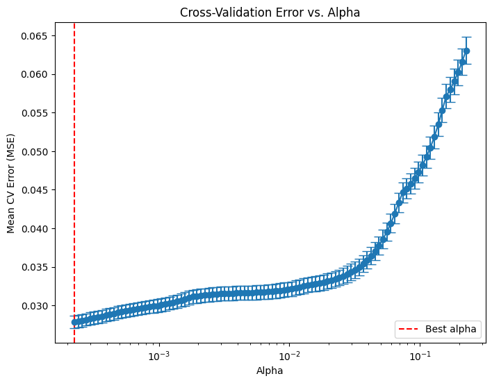
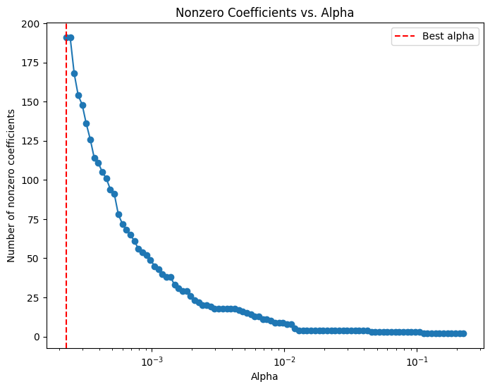
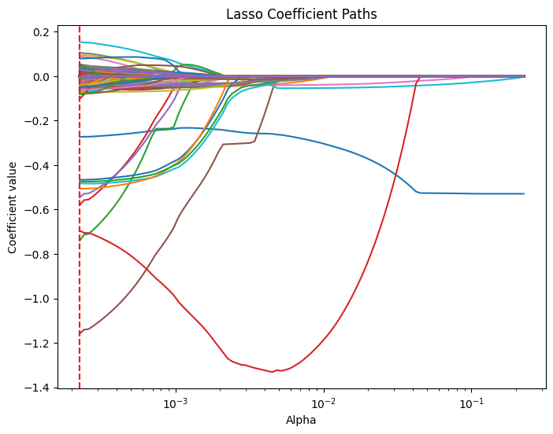

import numpy as np
import pandas as pd
import matplotlib.pyplot as plt
import seaborn as sns
from sklearn.preprocessing import scale # zero mean & one s.d.
from sklearn.linear_model import LassoCV, lasso_path
from sklearn.model_selection import train_test_split
from sklearn.metrics import mean_squared_errorHomework 4 - Part 1: Lasso Linear Regerssion - Model 2
Beer Markets with Big Demographic Design
#beer = pd.read_csv("https://bcdanl.github.io/data/beer_markets_xbeer_xdemog.zip")
beer = pd.read_csv("https://bcdanl.github.io/data/beer_markets_xbeer_brand_xdemog.zip")
#beer = pd.read_csv("https://bcdanl.github.io/data/beer_markets_xbeer_brand_promo_xdemog.zip")X = beer.drop('ylogprice', axis = 1)
y = beer['ylogprice']X_train, X_test, y_train, y_test = train_test_split(X, y, test_size=0.2, random_state=42)
y_train = y_train.values
y_test = y_test.values# LassoCV with a range of alpha values
lasso_cv = LassoCV(n_alphas = 100,
alphas = None, # alphas=None automatically generate 100 candidate alpha values
cv = 5,
random_state=42,
max_iter=100000)lasso_cv.fit(X_train.values, y_train)
#lasso_cv.fit(X_train.values, y_train.ravel())
print("LassoCV - Best alpha:", lasso_cv.alpha_)LassoCV - Best alpha: 0.00022539867869301466# Create a DataFrame including the intercept and the coefficients:
coef_lasso_beer = pd.DataFrame({
'predictor': list(X_train.columns),
'coefficient': list(lasso_cv.coef_),
'exp_coefficient': np.exp( list(lasso_cv.coef_) )
})
# Evaluate
y_pred_lasso = lasso_cv.predict(X_test)
mse_lasso = mean_squared_error(y_test, y_pred_lasso)
print("LassoCV - MSE:", mse_lasso)LassoCV - MSE: 0.028972019742897575coef_lasso_beer_n0 = coef_lasso_beer[coef_lasso_beer['coefficient'] != 0]X_train.shape[1]2645coef_lasso_beer_n0.shape[0]160coef_lasso_beer_n0| predictor | coefficient | exp_coefficient | |
|---|---|---|---|
| 0 | logquantity | -0.140849 | 0.868621 |
| 1 | container_CAN | -0.054905 | 0.946575 |
| 2 | brandBUSCH_LIGHT | -0.085638 | 0.917927 |
| 4 | brandMILLER_LITE | 0.000932 | 1.000932 |
| 5 | brandNATURAL_LIGHT | -0.474588 | 0.622141 |
| ... | ... | ... | ... |
| 2362 | marketRURAL_WEST_VIRGINIA:npeople2 | -0.030961 | 0.969513 |
| 2375 | marketTAMPA:npeople2 | 0.018641 | 1.018816 |
| 2376 | marketURBAN_NY:npeople2 | 0.008943 | 1.008983 |
| 2416 | marketRALEIGH-DURHAM:npeople3 | -0.005085 | 0.994928 |
| 2572 | marketEXURBAN_NJ:npeople5plus | 0.079611 | 1.082865 |
160 rows × 3 columns
# Compute the mean and standard deviation of the CV errors for each alpha.
mean_cv_errors = np.mean(lasso_cv.mse_path_, axis=1)
std_cv_errors = np.std(lasso_cv.mse_path_, axis=1)
plt.figure(figsize=(8, 6))
plt.errorbar(lasso_cv.alphas_, mean_cv_errors, yerr=std_cv_errors, marker='o', linestyle='-', capsize=5)
plt.xscale('log')
plt.xlabel('Alpha')
plt.ylabel('Mean CV Error (MSE)')
plt.title('Cross-Validation Error vs. Alpha')
#plt.gca().invert_xaxis() # Optionally invert the x-axis so lower alphas (less regularization) appear to the right.
plt.axvline(x=lasso_cv.alpha_, color='red', linestyle='--', label='Best alpha')
plt.legend()
plt.show()
# Compute the coefficient path over the alpha grid that LassoCV used
alphas, coefs, _ = lasso_path(X_train, y_train,
alphas=lasso_cv.alphas_,
max_iter=100000)
# Count nonzero coefficients for each alpha (coefs shape: (n_features, n_alphas))
nonzero_counts = np.sum(coefs != 0, axis=0)
# Plot the number of nonzero coefficients versus alpha
plt.figure(figsize=(8,6))
plt.plot(alphas, nonzero_counts, marker='o', linestyle='-')
plt.xscale('log')
plt.xlabel('Alpha')
plt.ylabel('Number of nonzero coefficients')
plt.title('Nonzero Coefficients vs. Alpha')
#plt.gca().invert_xaxis() # Lower alphas (less regularization) on the right
plt.axvline(x=lasso_cv.alpha_, color='red', linestyle='--', label='Best alpha')
plt.legend()
plt.show()
# Compute the lasso path. Note: we use np.log(y_train) because that's what you used in LassoCV.
alphas, coefs, _ = lasso_path(X_train, y_train,
alphas=lasso_cv.alphas_,
max_iter=100000)
plt.figure(figsize=(8, 6))
# Iterate over each predictor and plot its coefficient path.
for i, col in enumerate(X_train.columns):
plt.plot(alphas, coefs[i, :], label=col)
plt.xscale('log')
plt.xlabel('Alpha')
plt.ylabel('Coefficient value')
plt.title('Lasso Coefficient Paths')
#plt.gca().invert_xaxis() # Lower alphas (weaker regularization) to the right.
#plt.legend(bbox_to_anchor=(1.05, 1), loc='upper left')
plt.axvline(x=lasso_cv.alpha_, color='red', linestyle='--', label='Best alpha')
#plt.legend()
plt.show()